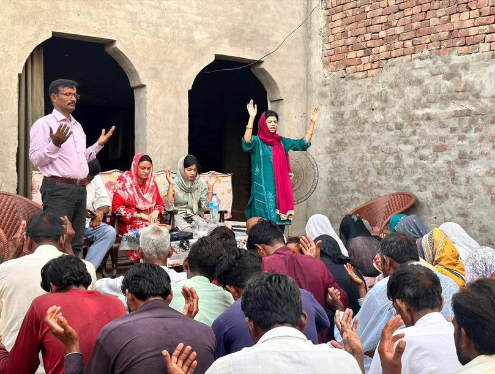
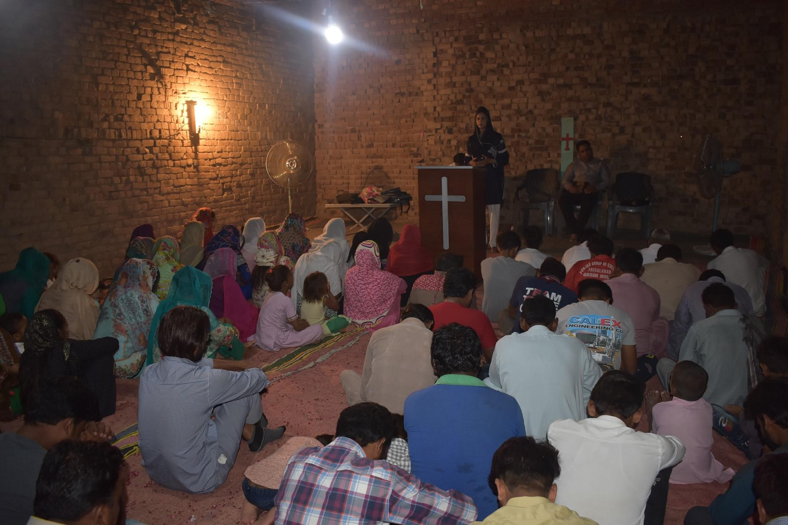
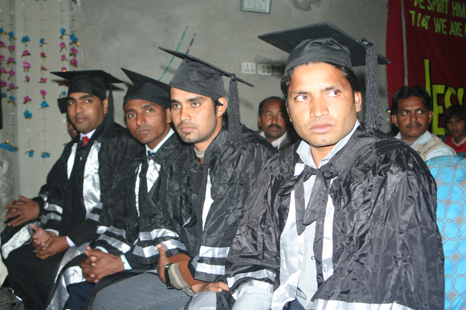
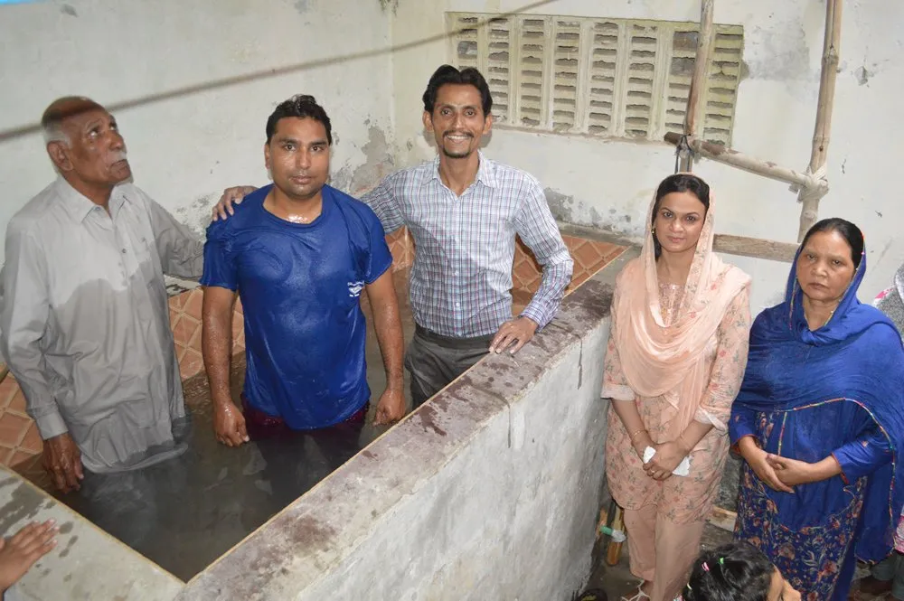
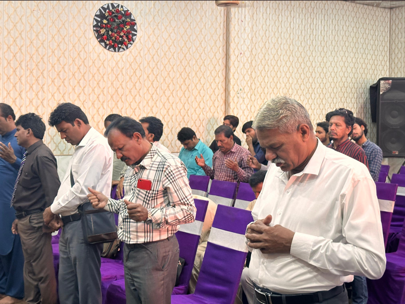
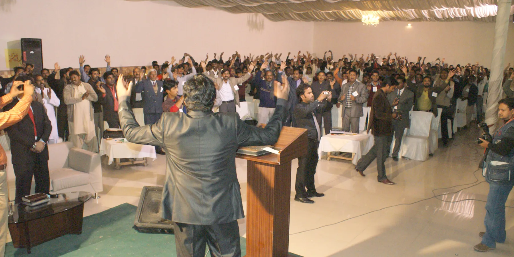

SHARING SMILES
HOPE BEHIND EVERY SMILE
HOPE BEHIND EVERY SMILE
Core Ministry
Since 2004, Sharing Smiles Pakistan has worked to establish Christ-centered churches in communities where there is little or no Gospel witness. Through indigenous missionaries, local pastors, and discipleship training, we are helping believers grow in their faith and become leaders who reach others for Christ.
Ministry Moments





Why Church Planting?
In Pakistan, millions of people still have little or no access to the Gospel, and many believers live without a local church, trained leadership, or opportunities for discipleship. Church planting is one of the most effective ways to bring lasting spiritual transformation because it establishes a permanent Gospel presence within communities.
A local church becomes a place where people can encounter Christ, grow in their faith, receive biblical teaching, and find hope in difficult circumstances. By planting churches. We are not only reaching individuals with the message of Jesus today, we are raising up future leaders, strengthening families, and creating centers of faith that will impact generations to come.
Our Approach
Sharing the Gospel through local missionaries and outreach teams.
Helping new believers grow in faith through Bible study and mentoring.
Establishing local fellowships where believers can worship and serve together.
Training pastors and indigenous leaders for long-term ministry impact.
Churches Planted
Missionaries & Pastors
Years of Ministry
Discipled and Equipped
Leadership Development
Sharing Smiles Pakistan regularly conducts leadership development programs for pastors, evangelists, and ministry workers. These gatherings provide biblical training, encouragement, accountability, and practical ministry skills.
Our goal is not only to plant churches but also to strengthen them through trained and equipped leaders.

Church Planting Process
Identifying areas with little or no Gospel witness.
Building relationships and sharing Christ.
Teaching new believers and forming small groups.
Establishing local fellowships.
Developing pastors and local leaders.
Helping churches plant new churches.
Matthew 28:19
Your partnership helps train leaders, disciple believers, distribute Bibles, and establish churches in unreached communities across Pakistan.